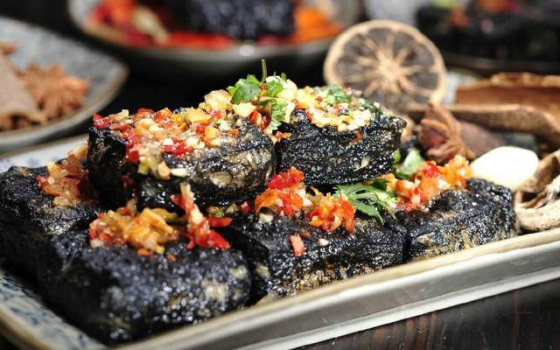

Top 3 Food in Chongqing
Chongqing Hot Pot (Chóngqìng Huǒguō)

Introduction
Chongqing Hot Pot is more than a meal—it’s a social ritual. Unlike milder hot pots in other cities, Chongqing’s version uses a “ma la” (numbing-spicy) broth made with Sichuan peppercorns, chili oil, doubanjiang (broad bean paste), and 20+ spices (e.g., star anise, cinnamon). The broth is simmered for hours to develop depth, and it’s served in a divided pot (one side for spicy broth, one for mild “clear broth” if requested). The best ingredients to dip include thinly sliced beef (shuanyangrou), duck intestines (yachang), tofu skin (doufupi), and lotus root (ougen)—locals cook them quickly in the boiling broth and dip in sesame sauce to balance the heat. It’s a must-try for anyone visiting Chongqing, best enjoyed with friends.
Taste
Broth: Fiery spicy with a numbing kick (from Sichuan peppercorns); rich and aromatic, with layers of spice.
Ingredients: Thin beef is tender and soaks up broth; duck intestines are chewy with a fresh flavor; tofu skin adds creaminess.
Dip: Sesame sauce cools the heat and adds a nutty sweetness, complementing the spicy broth.
Overall:Bold, addictive, and communal—every bite is a flavor explosion.
Preparation Method
1.Make the Spicy Broth: Heat 5 tbsp vegetable oil in a wok. Add 2 tbsp doubanjiang, 1 tbsp chili powder, 1 star anise, 1 cinnamon stick, and 3 minced garlic cloves; stir-fry for 2 minutes until fragrant. Pour in 1L beef broth and 1 tbsp Sichuan peppercorns; simmer for 1 hour.
2.Prep Ingredients: Slice 300g beef into thin pieces, clean 200g duck intestines (cut into 10cm sections), and slice 100g lotus root into thin rounds. Arrange ingredients on plates.
3.Set Up the Hot Pot: Pour the spicy broth into a divided hot pot (add clear broth to the other side if desired). Place the pot on a portable stove and bring to a boil.
4. Serve: Cook ingredients in the boiling broth (beef: 10 seconds; duck intestines: 30 seconds; lotus root: 2 minutes). Dip in sesame sauce (mix 3 tbsp sesame paste with 1 tbsp soy sauce and 1 tsp sugar) and enjoy.
Price
Local Hot Pot Restaurants: 80–150 CNY/person (includes broth, 5–6 ingredients, and drinks).
Famous Chains (e.g., “Haidilao”): 120–200 CNY/person (premium ingredients and table service, e.g., free manicures).
Street Food Hot Pot (Small Portions): 30–50 CNY/person (for a quick, casual meal).
Spicy Boiled Fish (Là Zhu Yu)

Introduction
Spicy Boiled Fish is a classic Chongqing dish—tender white fish (usually grass carp or silver carp) boiled in a fiery chili broth, served with bean sprouts and tofu. The key is the broth: it’s made with dried chili peppers, Sichuan peppercorns, and ginger, creating a clear but intensely spicy base. The fish is sliced thinly and marinated in rice wine and cornstarch to keep it tender, then boiled quickly in the broth so it stays juicy. Bean sprouts and tofu add crunch and creaminess, absorbing the broth’s flavor. It’s a popular dinner dish, often served with steamed rice to soak up the spicy broth.
Taste
Fish: Tender, flaky, and mild—no fishy taste; the broth infuses it with spice.
Broth: Clear but fiery, with a numbing hint; not greasy, so you can sip it (if you can handle the heat).
Toppings: Bean sprouts are crunchy and tangy; tofu is soft and creamy, balancing the fish.
Overall:Spicy but refreshing—lighter than hot pot, but still full of Chongqing flavor.
Preparation Method
1. Prep the Fish: Clean 1kg grass carp; slice the flesh into thin pieces (keep bones for broth). Marinate fish in 1 tbsp rice wine, 1 tsp cornstarch, and a pinch of salt for 20 minutes.
2. Make the Broth: Heat 3 tbsp vegetable oil in a pot. Add 10 dried chili peppers, 1 tbsp Sichuan peppercorns, 3 sliced ginger pieces, and 2 minced garlic cloves; stir-fry for 1 minute. Pour in 1.5L water and add the fish bones; simmer for 30 minutes. Strain out bones and return broth to the pot.
3. Cook the Toppings & Fish: Add 100g bean sprouts and 150g cubed tofu to the broth; simmer for 5 minutes until tender. Gently add the marinated fish slices (don’t stir too hard to avoid breaking) and cook for 3–4 minutes until the fish turns white and opaque.
4. Finish & Serve:4. Turn off the heat. Sprinkle 2 tbsp fresh chili flakes and 1 tbsp Sichuan peppercorns over the top. Heat 2 tbsp vegetable oil until smoking, then pour it over the chili flakes (this releases a fragrant, spicy aroma). Serve hot with steamed rice.
Price
Local Restaurants: 68–98 CNY/serving (uses 500–700g fish, enough for 2–3 people).
Seafood Restaurants: 108–158 CNY/serving (uses premium fish like grouper or bass, less fishy and more tender).
Home-Style Eateries: 58–78 CNY/serving (generous portion with extra bean sprouts and tofu).
Stinky Tofu (Chòu Dòufu)

Introduction
Stinky Tofu is a beloved Chongqing street food—fermented tofu fried until crispy on the outside and soft on the inside, served with a spicy chili dip. Despite its strong, pungent aroma (from the fermentation process), it’s a favorite among locals for its bold flavor. Chongqing’s version is “dry-fried” (no batter), so the outer layer is crunchy while the inside stays silky. The fermentation uses a mix of soybeans, salt, and spices, giving the tofu a savory, umami taste that pairs perfectly with the spicy dip (made with chili oil, garlic, and vinegar). You’ll find it at night markets, street stalls near Liberation Monument, and even in small alleyways—look for the telltale aroma and the sound of frying tofu.
Taste
Texture: Crispy, golden outer layer; soft, creamy inner layer—perfect contrast.
Flavor: Savory, umami-rich (from fermentation); the spicy dip adds heat and tang, cutting through any “stink” and balancing the taste.
Overall:Addictive—once you get past the aroma, it’s hard to stop eating.
Preparation Method
1. Ferment the Tofu: Cut 500g firm tofu into 5cm cubes. Soak in a fermented brine (mix 1L water, 3 tbsp salt, 1 tbsp Sichuan peppercorns, and 2 tbsp soy sauce; boil and cool) for 3–5 days (longer for stronger flavor). Remove and pat dry.
2. Fry the Tofu: Heat 500ml vegetable oil in a pan to 180°C. Add the fermented tofu cubes (fry in batches) and cook for 4–5 minutes until golden and crispy on the outside. Transfer to a plate lined with paper towels to drain.
3. Make the Spicy Dip: Mix 2 tbsp chili oil, 1 tsp minced garlic, 1 tsp rice vinegar, ½ tsp sugar, and a pinch of salt in a small bowl.
4. Serve:Place the fried tofu on a plate, drizzle with the spicy dip, and sprinkle with chopped green onions. Serve hot (best eaten immediately for crunch).
Price
Street Stalls/Night Markets: 8–12 CNY/5 pieces (the most common serving size).
Snack Shops: 15–20 CNY/8 pieces (larger cubes, often served with extra dip).
Tourist Areas (Liberation Monument): 12–15 CNY/5 pieces (slightly higher price, but convenient for visitors).